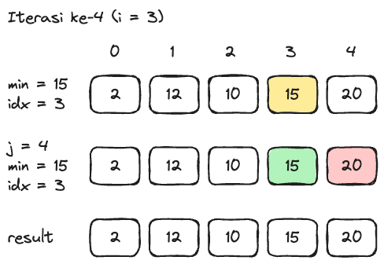

Selection Sort
Selection sort merupakan salah satu algoritma sorting sederhana selain bubble sort. Cara kerja algoritma ini adalah mencari data terkecil pada bagian yang belum diurutkan dan menukarnya dengan data pertama dari bagian yang belum diurutkan. Proses ini akan dijalankan secara berulang sampai seluruh data sudah terurut.
Berikut adalah simulasi kerja sorting data secara ascending (kecil ke besar) menggunakan selection sort dengan data awal di bawah ini.
{kind=link}
Data Awal
Secara umum, program akan melakukan tahapan sebagai berikut.
Memilih data pertama yang belum diurutkan sebagai nilai minimum. Simpan juga index dari data tersebut.
Iterasikan untuk membandingkan nilai minimum pada setiap data di dalam array yang belum diurutkan. Apabila terdapat data yang lebih kecil dari nilai minimum tersebut, nilai minimum dan index akan digunakan dengan nilai dan posisi data tersebut.
Setelah sampai pada data terakhir, tukarkan data pertama tersebut dengan data nilai paling minimum.
Tahap ke-1
Pada tahap ini, data paling pertama yang belum diurutkan, yaitu 20, dianggap sebagai nilai minimum. Data tersebut memiliki index 0. Setelah itu, dilakukan pengecekan untuk dengan data pada index 1, yaitu 12. Karena data tersebut memiliki nilai yang lebih kecil, maka nilai minimum diubah menjadi 12 dan index diubah menjadi 1. Hal itu terus dijalankan hingga iterasi selesai dilakukan. Hasilnya didapatkan nilai minimum adalah 2 dengan index 4. Terakhir, dilakukan penukaran antara data paling pertama yang belum diurutkan dengan data minimum tersebut.
{kind=link}
Simulasi Selection Sort Tahap ke-1
Tahap ke-2
Pada tahap ini, data paling pertama yang belum diurutkan, yaitu 12, dianggap sebagai nilai minimum. Setelah iterasi selesai, hasilnya didapatkan nilai minimum adalah 10 dengan index 2. Kemudian dilakukan penukaran antara data paling pertama yang belum diurutkan dengan data minimum tersebut.
{kind=link}
Simulasi Selection Sort Tahap ke-2
Tahap ke-3
Pada tahap ini, data paling pertama yang belum diurutkan, yaitu 10, dianggap sebagai nilai minimum. Setelah iterasi selesai, hasilnya didapatkan tidak ada perubahan nilai minimum, sehingga proses penukaran data tidak dilakukan.
{kind=link}
Simulasi Selection Sort Tahap ke-3
Tahap ke-4
Pada tahap ini, data yang ada di dalam kumpulan data (array) sudah terurut dari kecil ke besar, sehingga simulasi selection sort sudah selesai.
{kind=link}
Simulasi Selection Sort Tahap ke-4
Implementasi Selection Sort
public class Main {
// Deklarasi method selectionSort dengan parameter sebuah array tipe data int
public void selectionSort(int[] numbers) {
// Deklarasi variabel x bernilai panjang dari sebuah array
int x = numbers.length;
// Iterasi untuk menandakan jumlah iterasi yang perlu dilakukan
for (int i = 0; i < x - 1; i++) {
// Deklarasi variabel min_idx bernilai dari variabel i untuk menunjukan index nilai minimum
int min_idx = i;
// Iterasi untuk menemukan nilai data terkecil yang belum diurutkan
for (int j = i + 1; j < x; j++) {
// Seleksi untuk mengecek nilai data lebih kecil dibandingkan dengan nilai minimum
if (numbers[j] < numbers[min_idx]) {
// Mengubah variabel min_idx dengan index nilai minimum terkecil
min_idx = j;
}
}
// Seleksi untuk mengecek apakah terdapat perubahan index nilai minimum terkecil
if (min_idx != i) {
// Menukar nilai antara data pertama yang belum diurutkan dengan data terkecil
int temp = numbers[min_idx];
numbers[min_idx] = numbers[i];
numbers[i] = temp;
}
}
}
public void print(int[] numbers) {
for (int number : numbers) {
System.out.print(number + " ");
}
}
public Main() {
int[] numbers = {20, 12, 10, 15, 2};
selectionSort(numbers);
print(numbers);
}
public static void main(String[] args) {
new Main();
}
}
2 10 12 15 20
Kompleksitas Waktu Selection Sort
Pada algortima selection sort, ketiga kasus memiliki kompleksitas waktu yang sama, yaitu O(n^2). Hal ini disebabkan karena algoritma selection sort perlu memeriksa seluruh array untuk menemukan data yang paling kecil.
Kompleksitas Ruang Selection Sort
Pada algortima selection sort, ketiga kasus memiliki kompleksitas ruang yang sama, yaitu O(1). Hal ini disebabkan karena algoritma selection sort hanya menggunakan satu buah variabel pembantu untuk menyimpan nilai sementara saat pertukaran data.
Note
Algoritma selection sort tidak disarankan untuk digunakan dalam mengurutkan data yang jumlahnya besar.